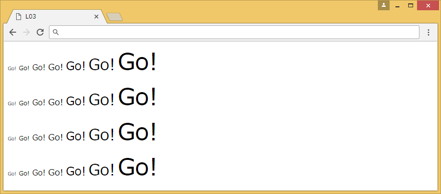
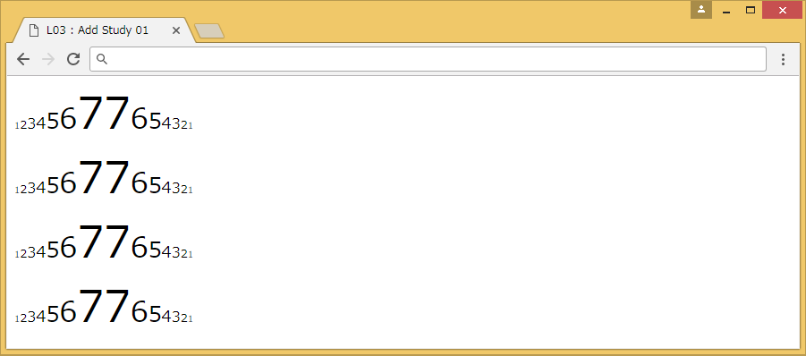

[Lesson 3] for 文（３）
for文の多重ループを使用し、文字列を表示しましょう。
[ 保存名 ] L03
[ プログラム仕様書 ] 文字列「Go!」をフォントサイズ1～7まで7段階に変えながら1行に表示することを5回繰り返す。
[ 実行イメージ ]

[コード入力手順]
① for文を使用し、5回繰り返しを作成し、改行する。
② for文を使用し、フォントサイズを1～7まで+1しながら、「Go!」の文字を繰り返し表示する。
アドバイス
for文を使ったループの注意
for文の（ ）内の終了条件を誤ると、無限ループが起こります。
終了条件で使える演算子は「<」、「>」、「<=」、「>=」の4種類です。
ポイント
■ 複数のfor文の書き方と実行順序
|
①forのブロック
②forのブロック
|
独立したfor文が複数ある場合 ①が繰り返された後、②が繰り返される |
|
①forのブロック
②for
|
for文の中にfor文が入っている多重ループ ②の繰り返しが、②の回数分繰り返される |
■ 今回のfor文のイメージ
②のfor
拡大
②for
フォントサイズの拡大
フォントサイズの拡大
拡大
追加練習
文字列「Go!」の替わりに変数を表示させる。
フォントサイズを7～1に縮小する処理を追加する。
実行イメージ
答え
分からなかった場合などは答えを見てみましょう。
<script>
for(var i=1;i<5;i++){
for(var j=1;j<=7;j++){
document.write("<font size="+j+">Go!</font> ");
}
document.write("<br />");
}
</script>
<script>
for(var i=1;i<5;i++){
for(var j=1;j<=7;j++){
document.write("<font size="+j+">"+j+"</font>");
}
for(var k=8-1;k>=1;k--){
document.write("<font size="+k+">"+k+"</font>");
}
document.write("<br />");
}
</script>